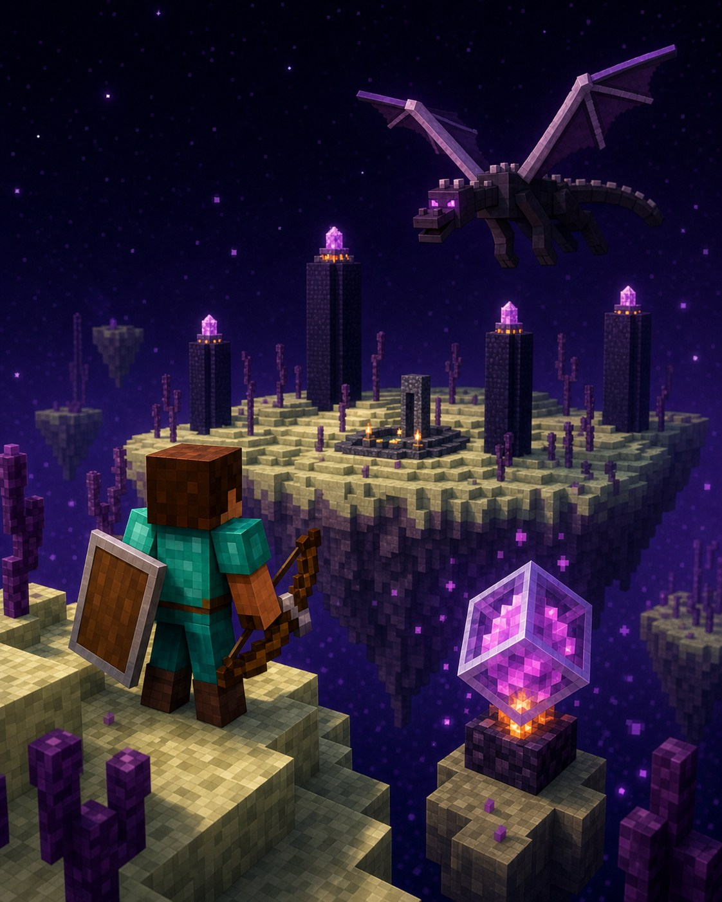

Велика пригода
Світ не закінчується вдома
Енд — це
великий
фінальний виклик.
У Енді живе дракон. Його перемога відкриває шлях назад і до далеких островів із рідкісними речами.

Навіщо йти в Енд?
Це не кінець гри, а новий рівень пригод. Після дракона з’являється шлях до зовнішніх островів, міст Енду й елітр.
✦ головний виклик↑ відкриває вихід◆ веде до рідкісних речей
Три прості дії
Як підготуватися
1Збери набір виживанняЇжа, блоки, меч, лук і щит+
Візьми більше, ніж здається потрібним. У Енді немає звичайної бази поруч.
2Зруйнуй кристалиВони лікують дракона+
Стріляй з лука або піднімайся обережно, але стеж за падінням.
3Повернися через вихідний порталВін активується після дракона+
Після перемоги він поверне тебе в звичайний світ, а поруч з’явиться шлях до далеких островів.
Похід в Енд: мінімум
Їжа й
блоки
+блоки
Лук і
щит
→щит
Готовий
дослідник
дослідник
● Перед входом склади зайві речі у скриню на базі.
!
Підказка мандрівникові
Важливо знати
Не дивись ендерменам в очі
Гарбуз або уважність допоможуть уникнути бійки.
Без мостів не ходи
Падіння в порожнечу небезпечне.
Дракон — не єдина ціль
Після нього відкриються нові острови й знахідки.
5
Маленьке завдання
Спробуй за 5 хвилин
- Підготуй окрему скриню «похід в Енд».
- Поклади в неї блоки, їжу, лук і щит.
- Перевір, чи є точка відродження вдома.